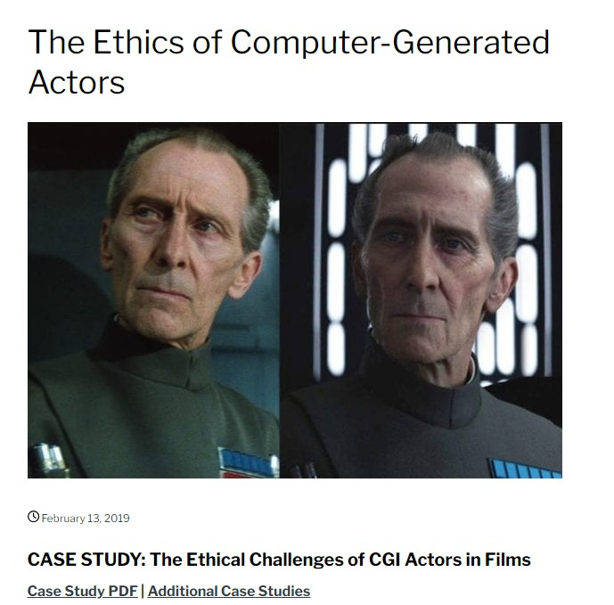
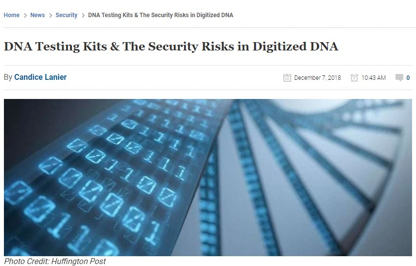
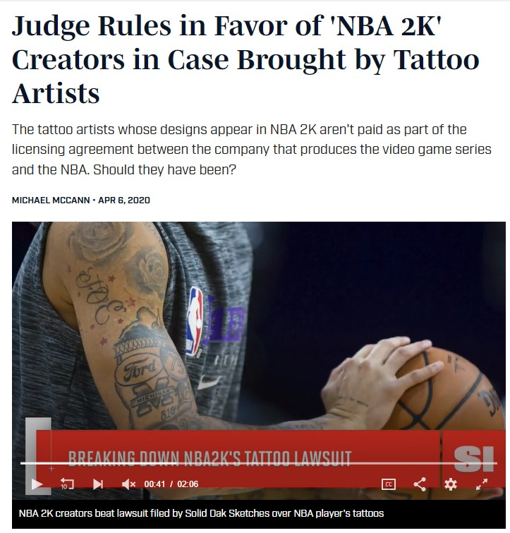

| Article#1 | Article#2 | Article#3 | Article#4 | Wireframe |
|---|
A digital dilemma is a tricky situation that can occur in digital life—and it doesn't always have an obvious right or wrong answer. Even when someone has been hurt or wronged, the right way to respond in a digital dilemma is often unclear. Acknowledging this complexity helps students dig in to the messiness of real issues they face, and come up with thoughtful and realistic action steps. In this project there will be three articles based on digital dilemma. You will see how they impact society.
  